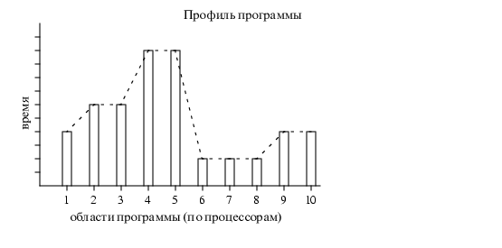

Профилирование
Профилирование (profiling ) позволяет вам изучить, где ваша программа расходует свое время, и
какие функции вызывали другие функции, пока программа
исполнялась. Эта информация может указать вам на ту часть программы, которая исполняется медленнее, чем вы ожидали, и которая может
быть кандидатом на переписывание, чтобы ускорить выполнение программы.
Эта информация также подскажет вам, какие функции
вызывались чаще или реже, чем вы ожидали.
Это может помочь вам отметить ошибки, которые иначе остались бы незамеченными.
Профайлер использует информацию, собранную в процессе реального
исполнения вашей программы. Он может быть использован для
исследования программ. Профилем называется гистограмма или график, изображающий время загруженности
различных частей программы.
Существуют автоматические средства профилирования. Например, бесплатная утилита профилирования
GNU gprof, написанная Jay Fenlason.
Профилирование состоит из следующих этапов:
- компилирование программы с возможностью профилирования;
- выполнение программы для генерации файла данных профилирования;
- запуск "gprof " для анализироания данных профилирования.
Результатом анализа является файл, содержащий две таблицы - "Простой профиль" ("flat profile") и
"Граф вызовов" ("call graph") (с замечаниями, кратко объясняющими содержимое этих таблиц).
Простой (flat) профиль показывает, сколько времени потратила ваша программа на исполнение каждой
функции и сколько раз эта функция вызывалась. Если вам надо просто узнать, какие функции требуют
большего времени, то это видно именно отсюда.
Граф вызовов показывает для каждой функции, какие функции ее вызывали, какие функции вызывала
она сама и сколько раз. Также здесь показано, сколько времени было затрачено на выполнение
подпрограмм в каждой функции. Это может подсказать вам места, в которых вы можете попытаться
исключить вызовы функций, требующих достаточно много времени на выполнение.
Руководство по использованию GNU профилировщика "gprof" (русск.)
Более о GNU gprof (англ.)
Другие средства профилировки и
анализа производительности:
- Для MPI-программ Vampir/Vampirtrace
- Средство параметрического анализа для программ, использующих средства PVM, MPI и PARMACS
Dimemas (коммерческий продукт с
предоставдением демонстрационной версии на один месяц)
- Другие средства



 [Назад]
[Оглавление]
[Вперед]
[Назад]
[Оглавление]
[Вперед]
Последнее обновление 21.11.2001 WebMaster